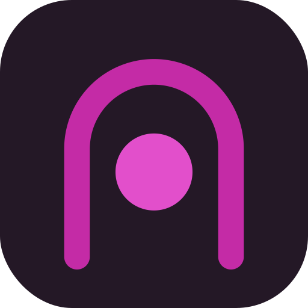
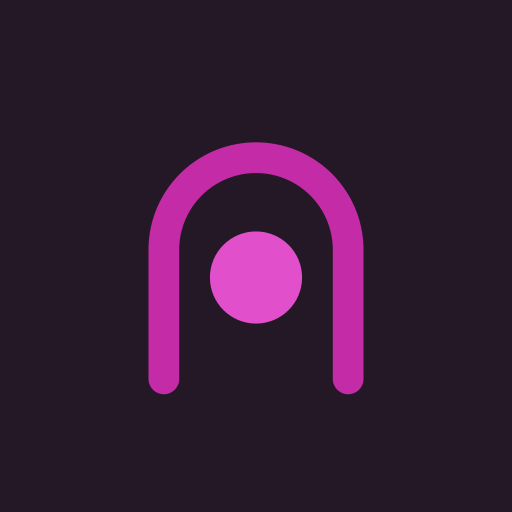
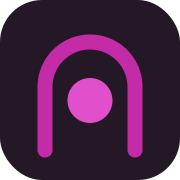

Set de marca listo para producción. El símbolo es un portal (galería) con un círculo flotante que puede animarse (pulso). Logo y favicon salen del mismo sistema.
Texto en Manrope convertido a contornos (no depende de la fuente instalada). "Cadence" en bold, "gallery" en light color #9A55C4.



apple-touch| Archivo | Uso |
|---|---|
lockup_light.svg / lockup_dark.svg | Firma horizontal para fondo claro / oscuro (vector, texto a contornos). |
mark_color.svg / mark_white.svg / mark_ink.svg | Solo el símbolo, fondo transparente: color, blanco (sobre oscuro), monocromo. |
icon_color.svg | App icon maestro (cuadrado redondeado). |
icon_maskable.svg | Versión full-bleed para Android (zona segura 72%). |
favicon.svg · favicon.ico | Favicon vector + .ico multi-tamaño (16/32/48). |
icons/icon-{16…1024}.png | App icon rasterizado para tiendas y web. |
icons/apple-touch-icon.png | Icono iOS (180px). |
icons/maskable-{192,512}.png | PWA Android (purpose: maskable). |
site.webmanifest · head-snippet.html | Manifest PWA y etiquetas <link> para pegar en el <head>. |